Wir trennen uns vom SV BW 91 Bad Frankenhausen mit 1:1.
BERICHT FOLGT
Spieldaten
SV BW 91 Bad Frankenhausen – 1. SC 1911 Heiligenstadt 1:1 (1:0)
SV BW 91 Bad Frankenhausen
Linde – Friedemann – Sondermann – Schlätzer (57. Gödicke) – Riedel (81. Hellmich) – Bickel (42. Börsch) – Arnold – Meier (61. Lobodasch) – Schneider – Helbing – Liese
SC Heiligenstadt
Stankovic – Wolanski – Jeschke – Göbel – Lerch – Hoch – Wilhelm (61. Jargees Ali) – Michalek (61. Roth) – Grimm (72. Dornieden) – Schnellhardt – Fiedler (72. Köhler)
Schiedsrichter
Bachmann
Zuschauer
273
Tore
1:0 Schlätzer (16.), 1:1 Schnellhardt (70.)
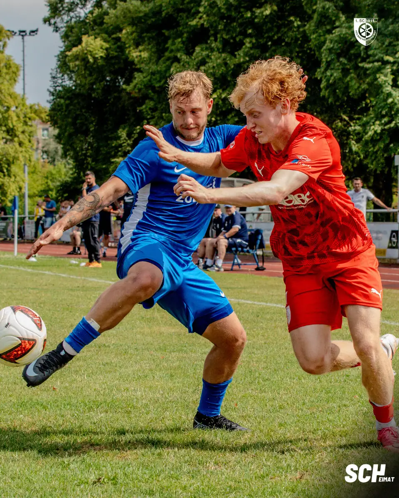
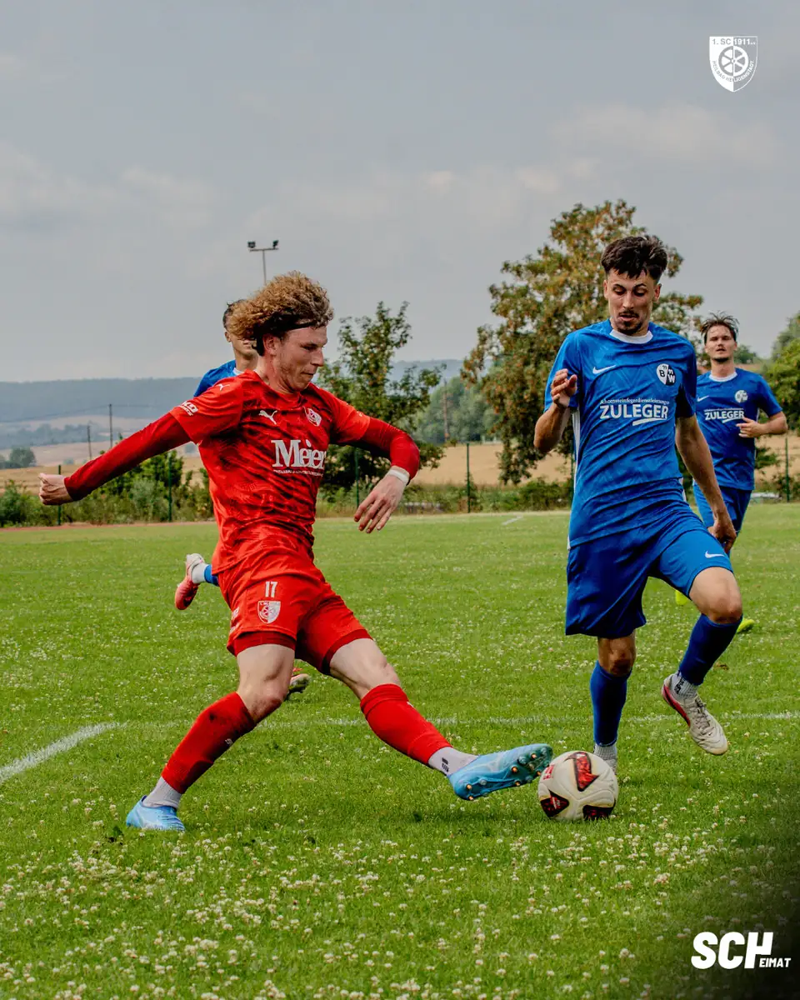
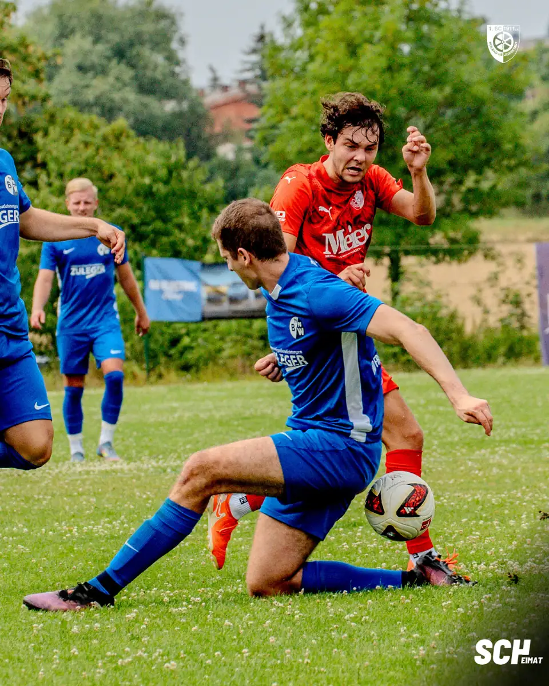
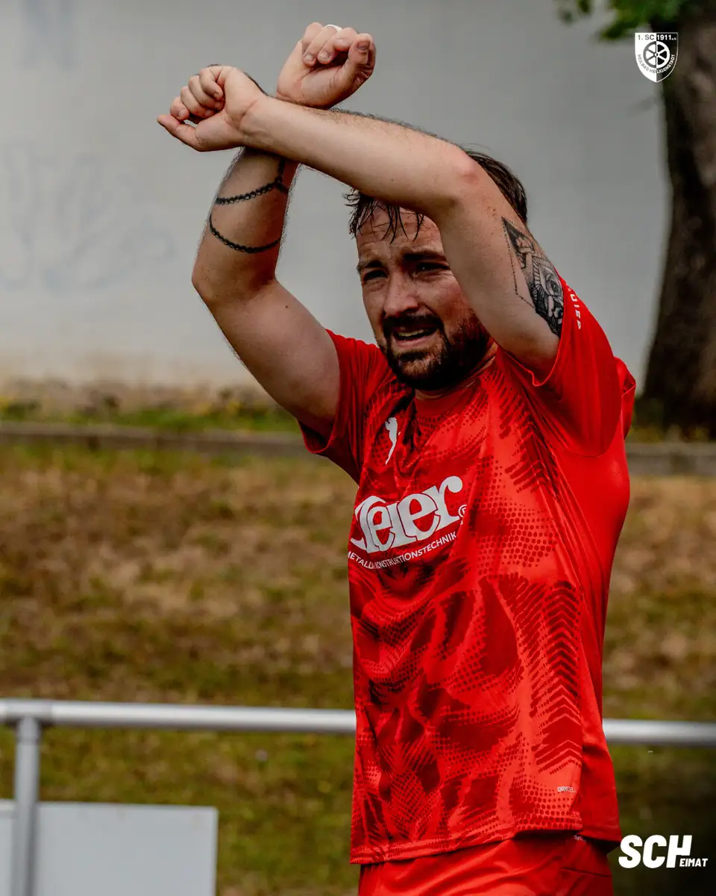
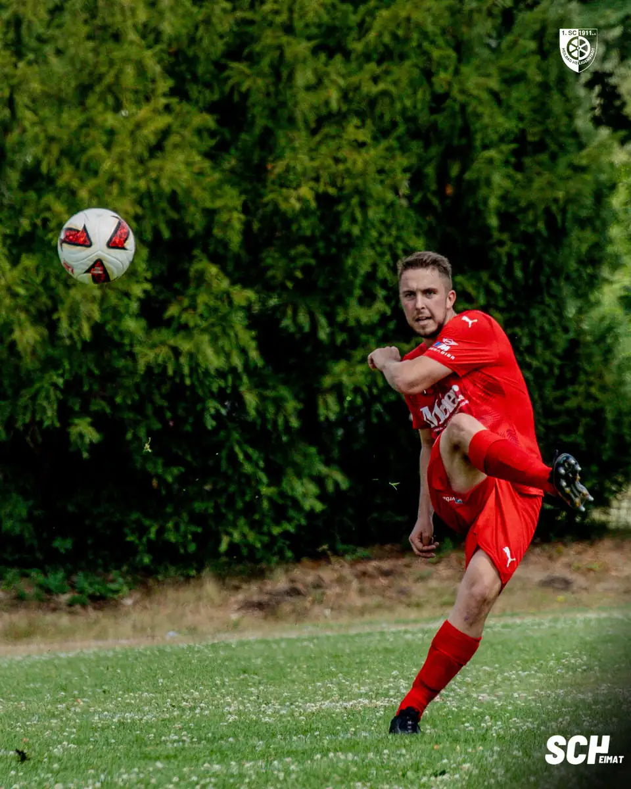
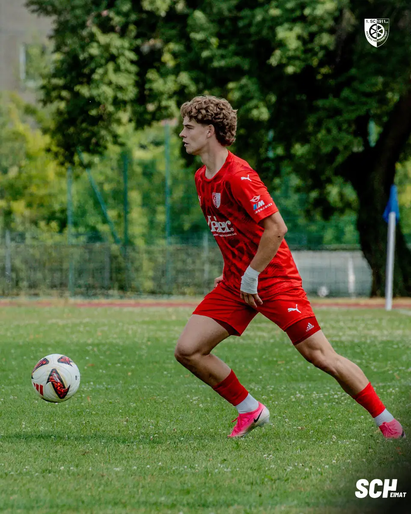
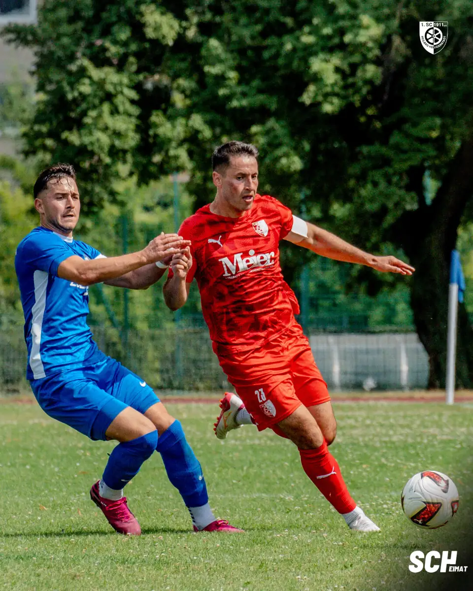
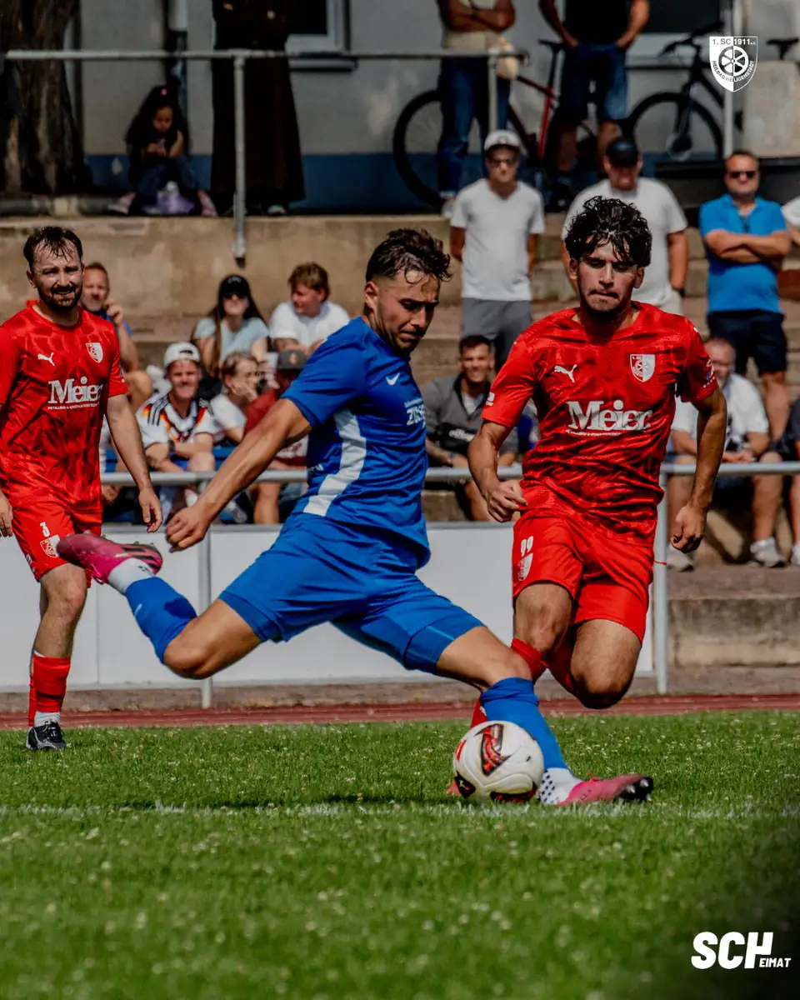
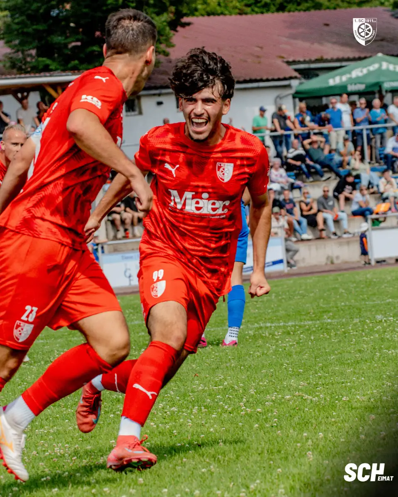
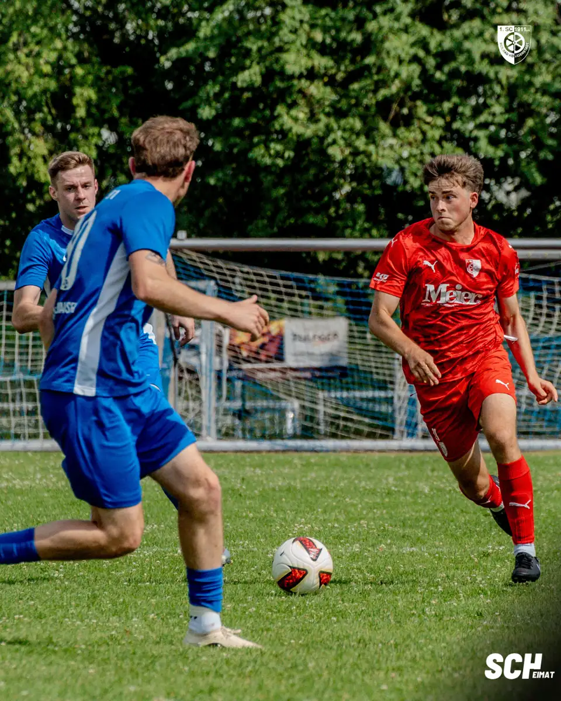
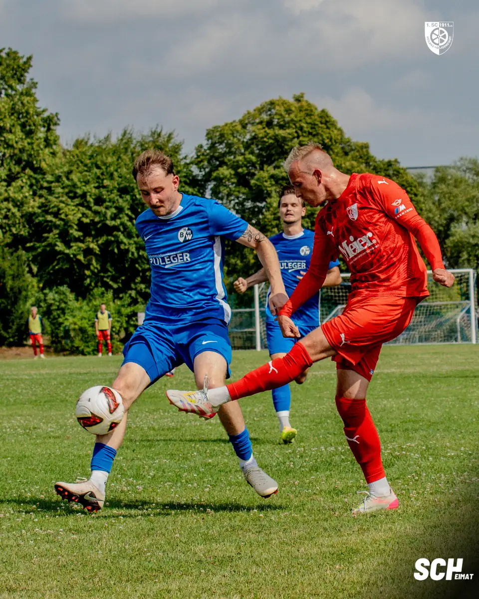
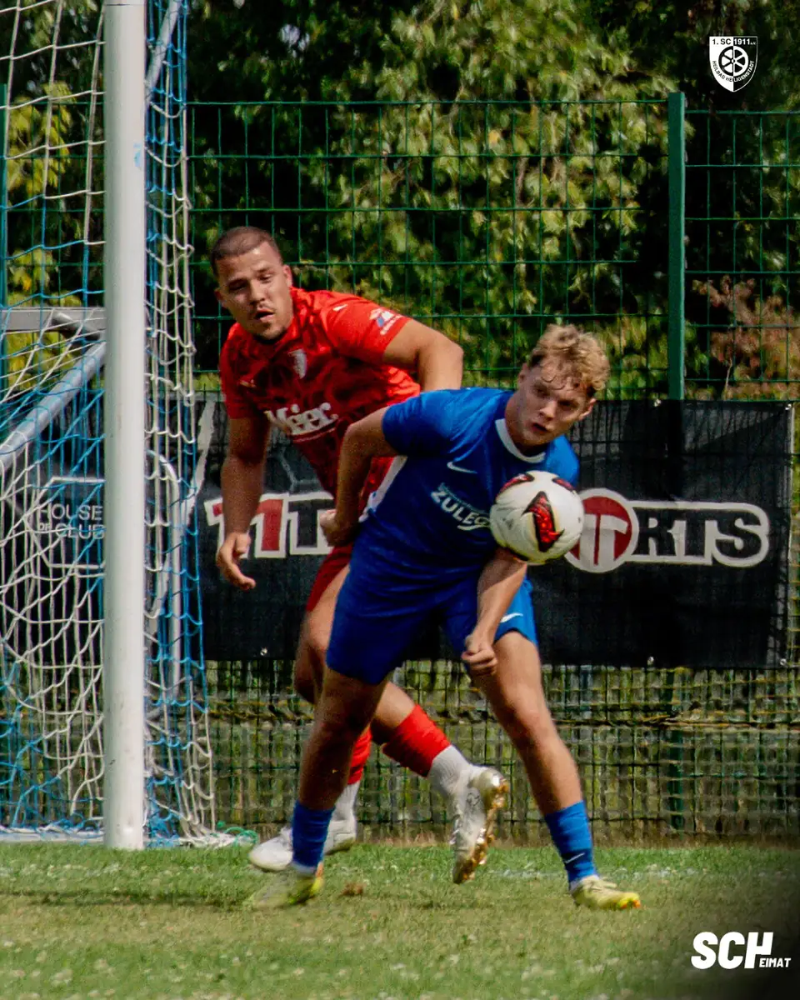
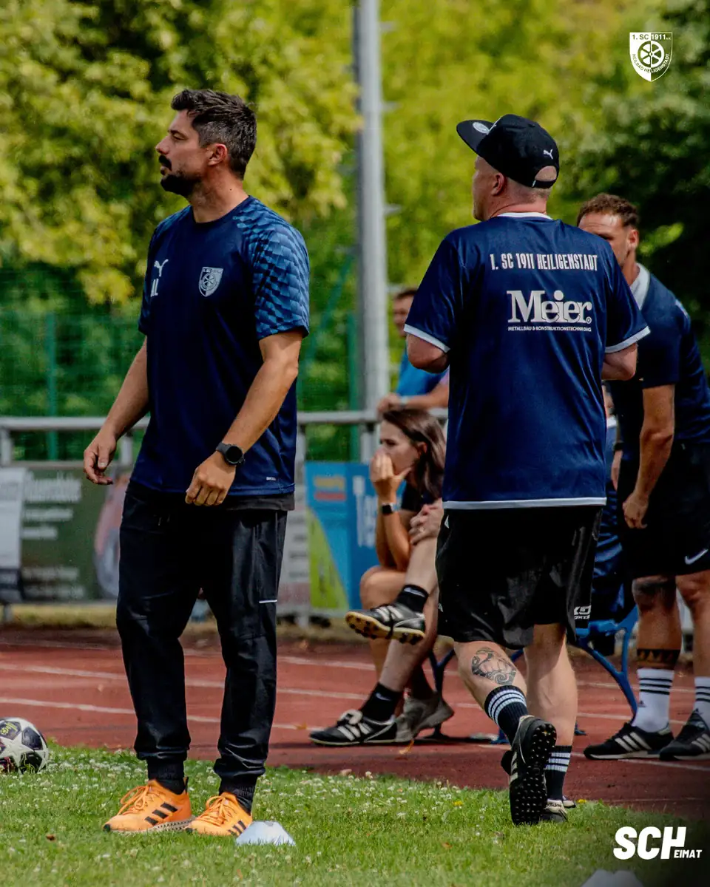